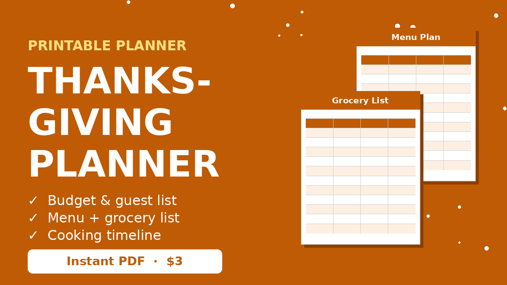

Thanksgiving Dinner Cost Calculator (Turkey Size + Cost Per Guest)
Hosting Thanksgiving this year? Enter your guest count and local prices to see how big a turkey to buy, how much of each side to make, and what the whole dinner will cost per guest.
Main
Sides and extras ($ per adult serving)
How much turkey per person?
The usual rule is 1 to 1.5 pounds of whole turkey per person (bone included), and closer to 1.5 if you want leftovers. Kids count as about half. For a boneless turkey breast, plan on about 0.5 to 0.75 pounds per person.
Thaw time cheat sheet
| Turkey size | Fridge thaw | Feeds |
|---|---|---|
| 8 to 12 lb | 2 to 3 days | 6 to 10 |
| 12 to 16 lb | 3 to 4 days | 10 to 14 |
| 16 to 20 lb | 4 to 5 days | 14 to 18 |
| 20 to 24 lb | 5 to 6 days | 18 to 22 |
Allow about 24 hours in the fridge for every 4 to 5 lb.
Ways to host Thanksgiving for less
- Make it a potluck. Ask guests to bring a side or dessert, then set the "cut %" above to see the savings.
- Buy the turkey early. Many stores run loss-leader turkey deals 1 to 2 weeks before.
- Plan the menu and grocery list together so nothing gets bought twice. Our meal plan on a budget guide shows how.
- Put the dinner into your full season plan with the free Holiday Budget Starter printable.

Thanksgiving Dinner Planner, $3
A 6-page printable that keeps the whole day on track: budget, guest list, menu, grocery list, cooking timeline and leftovers plan.
FAQ
How much does Thanksgiving dinner cost per person?
For a home-cooked dinner with turkey and classic sides, many families spend roughly $6 to $12 per guest depending on local prices and how much they make from scratch. Enter your own prices in the calculator for a precise number.
How big a turkey do I need?
Plan 1 to 1.5 lb of whole turkey per adult and about half that per child. For 8 adults and 3 kids with some leftovers, that is roughly a 13 to 15 lb bird.
How can I make Thanksgiving cheaper?
Host a potluck, buy the turkey on sale early, cook from scratch, and plan the grocery list around the menu so nothing is wasted.